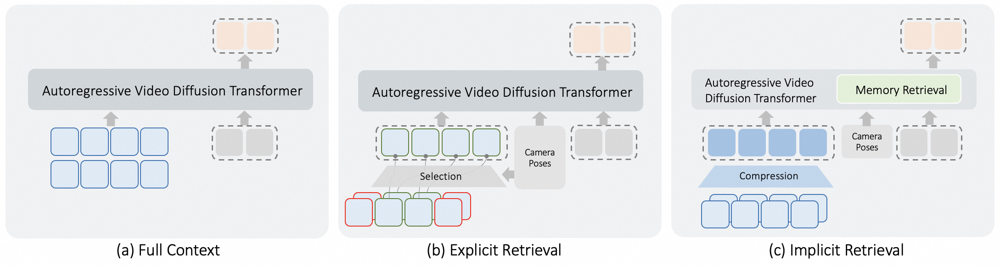
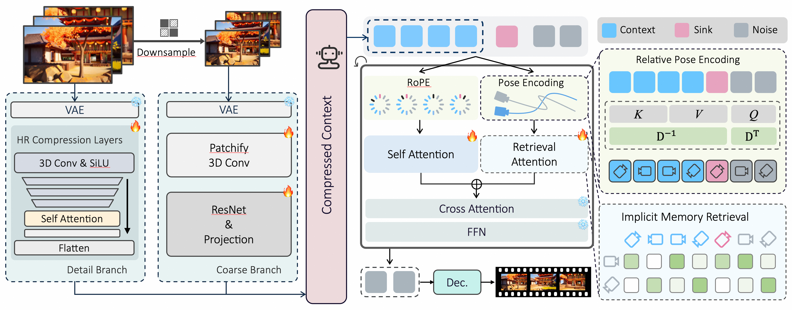
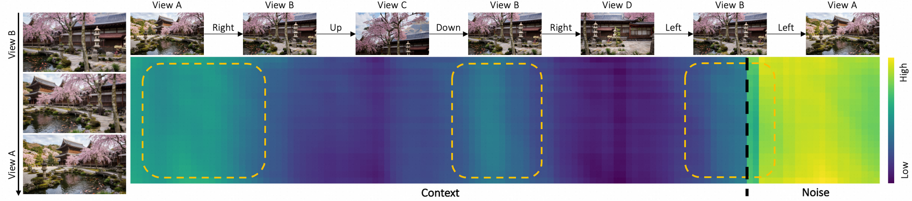
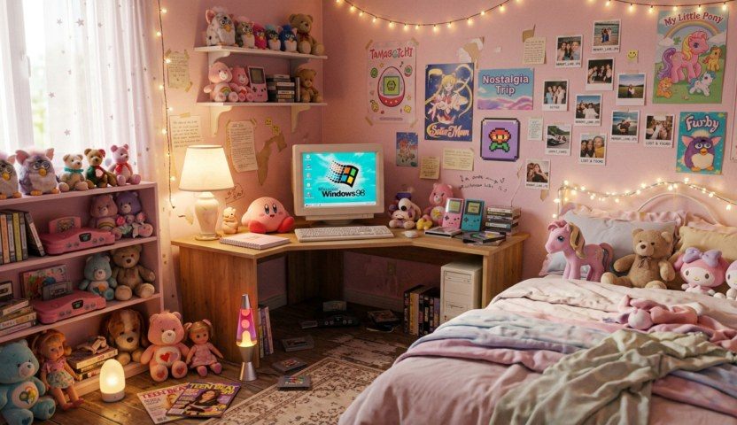
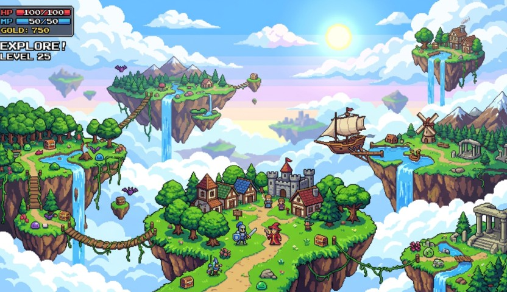
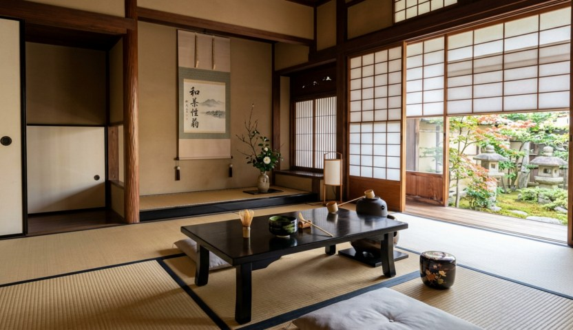
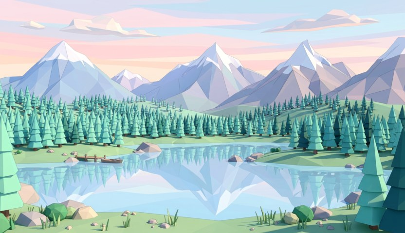
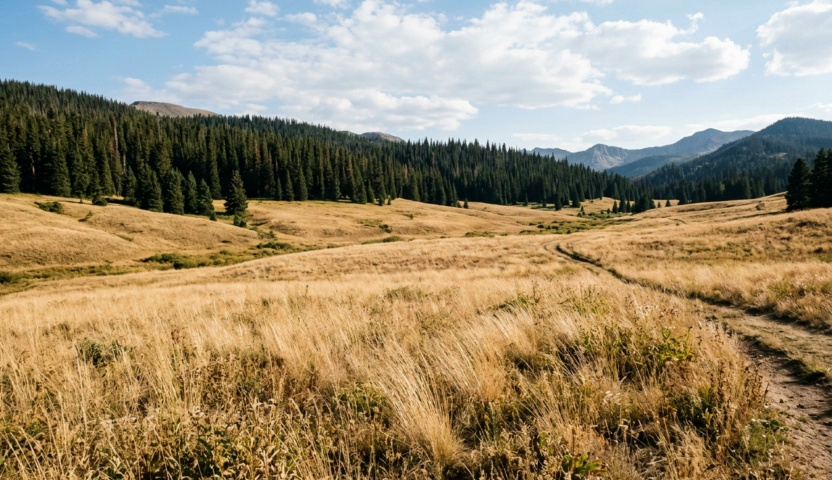

Teaser
Showcasing four core capabilities of CaR
Abstract
Video world models hold promise for simulating interactive environments, yet maintaining consistent long-term memory across complex camera trajectories remains a critical challenge. Existing methods typically rely on computationally expensive context scaling or rigid heuristic retrieval mechanisms, which lacks generalization to varying camera trajectories and environments. In this paper, we propose CaR, an attention-driven implicit memory retrieval mechanism to overcome these limitations. By injecting viewpoint information via positional encoding, our method performs flexible memory retrieval through attention computation. To efficiently process extended contexts with minimal computational overhead, we further introduce a lightweight context compression network. Furthermore, we construct SceneFly, a large-scale synthetic dataset featuring realistic camera trajectories and frame-level annotations to train and evaluate long-horizon video world models. Extensive experiments demonstrate that our approach achieves state-of-the-art results on established benchmarks and exhibits strong generalization to open-domain scenes.
CaR eliminates handcrafted retrieval rules by letting the model retrieve directly within the attention mechanism. A dedicated Retrieval Attention branch encodes each token with Relative Pose Encoding, so attention scores naturally reflect viewpoint similarity. Combined with efficient context compression, CaR enables consistent long-horizon generation and uniquely supports Camera Hard Cut transitions with fully discontinuous trajectories.
Motivation
Comparison of three memory retrieval paradigms for video world models

(1) Scaling up the context window to utilize the entire context as memory is computationally prohibitive, rendering it impractical. (2) Explicit retrieval relies on hand-crafted heuristic rules; the rigidity of these rules severely restricts the model's generalization across diverse camera trajectories and scenes. (3) In contrast, our implicit retrieval is an attention-driven mechanism where the model performs retrieval directly within the global context, yielding both greater flexibility and superior performance.
Method Overview
Three core innovations enabling long-horizon video generation with implicit memory

A dual-branch compression network converts the historical video into compact context tokens. The context, an uncompressed sink frame, and noisy target tokens are then processed by two parallel attention branches: standard self-attention preserves the pretrained video prior, while Retrieval Attention uses relative camera poses to retrieve relevant history and control the target viewpoint.
Implicit Memory Retrieval
A zero-initialized Retrieval Attention branch runs in parallel with standard self-attention. Relative Pose Encoding injects relative camera viewpoints into attention, naturally suppressing irrelevant history and amplifying geometrically similar viewpoints — no handcrafted rules needed.
Context Compression
A dual-branch encoder combines a coarse path (pixel-space downsampling) with a detail path (latent downsampler), dramatically reducing the context token count. This makes global attention over the full history computationally affordable without discarding retrieval-relevant evidence.
Flexible Viewpoint Switching
Supports Camera Hard Cut generation — discontinuous viewpoint transitions with no local frame continuity. By independently encoding past contexts, the model must retrieve purely from long-term memory, directly demonstrating spatial generalization.
Attention Visualization
The attention mechanism automatically focuses on viewpoints most relevant to the current generation target

Attention logits from the generation target to all context frames via the Retrieval Attention branch. The model automatically suppresses attention to frames with dissimilar camera poses and amplifies attention to geometrically similar viewpoints, empirically validating the implicit retrieval mechanism driven by Relative Pose Encoding.
Single Image Scene Exploration
Given a single image and target camera trajectory, CaR generates scene-consistent videos from novel viewpoints. The Retrieval Attention branch retrieves relevant visual memory from the compressed context to maintain spatial consistency across diverse scenes and motion styles.

No ImgPrompt
A dreamcore pink-pastel bedroom with floating objects.

No ImgPrompt
A vibrant pixel-art floating island game world. Camera slowly scrolls forward, revealing new terrain.
Prompt
A cosy independent bookshop with floor-to-ceiling shelves.
Prompt
A suspension bridge over a city river at night in black and white.
Prompt
A pour-over coffee brewing on a cafe counter with steam rising.

No ImgPrompt
A serene Japanese tea ceremony room with tatami mats.
Prompt
Golden autumn leaves scattered on a sunlit surface.

No ImgPrompt
A low-poly geometric mountain landscape at sunset.
Prompt
A village scene rendered in oil painting style, warm afternoon light...
Prompt
Golden and orange autumn leaves in a sunlit deciduous forest.
Prompt
A mountain goat on rocky alpine hillside under clear sky.
Prompt
A snow-capped mountain summit rising above dramatic clouds.
Flexible Viewpoint Switching
CaR uniquely supports Camera Hard Cut generation — synthesizing videos where the target camera trajectory is fully discontinuous relative to the input context. By enforcing abrupt viewpoint shifts and independently encoding past contexts, this setting acts as a pure retrieval test devoid of local frame continuity.
Prompt
A misty green hillside with fog rolling over pine trees.

No ImgPrompt
Dry golden grass meadow in summer with dark pine forest behind. Camera slowly pushes through the grass.
Prompt
A snow-capped mountain range under dramatic clouds.
Prompt
A stone arch bridge over a calm river in a European city.
Prompt
The Great Wall of China winding over misty mountains.
Prompt
A lush tropical waterfall into a turquoise pool.
BibTeX
@article{peng2026car,
title={Compression and Retrieval: Implicit Memory Retrieval for Video World Models},
author={Peng, Zhan and Ma, Jie and Sun, Huiqiang and Gao, Chong and
Xue, Zhijie and Pan, Zhiyu and Cao, Zhiguo and
Liang, Jun and Li, Jing},
journal={arXiv},
year={2026}
}